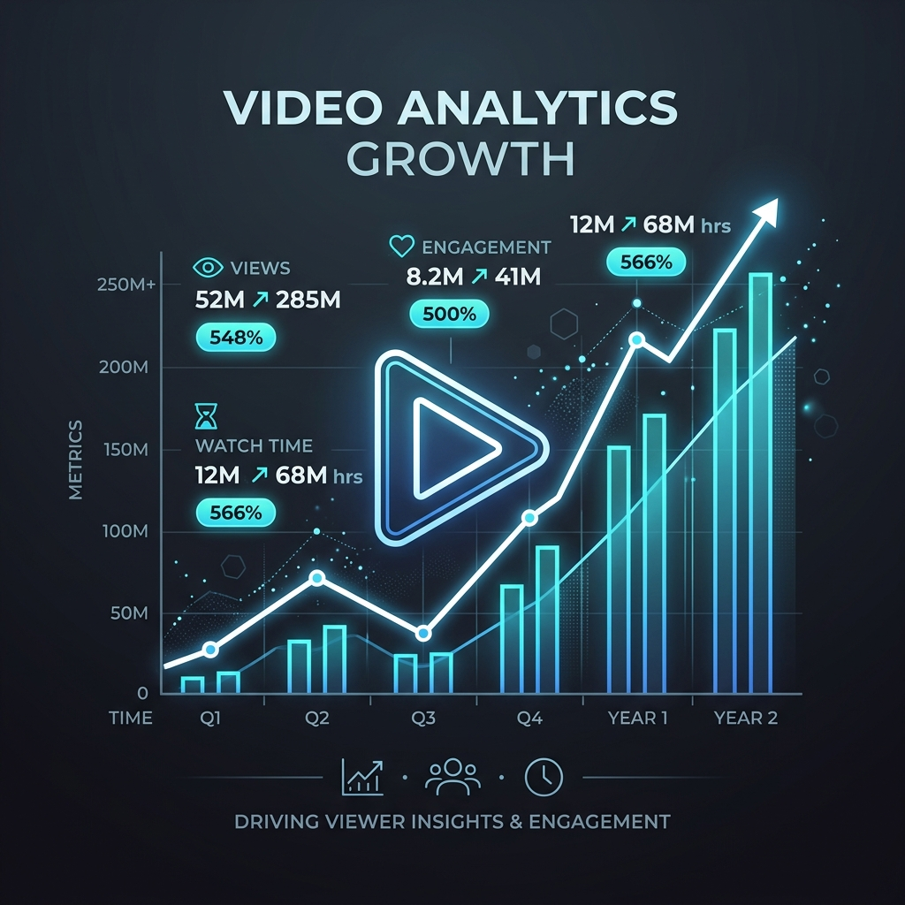

At ClinchWorks, we treat YouTube as a highly analytical search engine. We structure content to exploit deep algorithmic momentum and aggressively scale channel retention curves.
We remove the guesswork by auditing exact audience demographics, reverse engineering what hooks them securely, and packaging your videos into assets designed for maximum Click-Through Rates (CTR).

The best video dies if it is never clicked. We run highly psychological design constraints creating contrasting thumbnails and search-ready titles that demand clicks natively.
We meticulously study your drop-off graphs inside YouTube Studio. By identifying exactly where viewers leave, we restructure pacing to drastically increase Average View Duration (AVD).
Every video is a searchable asset. We map proper semantic keywords across your descriptions, titles, and tags so that you dominate both suggested algorithms and direct search.
We understand the math behind the platform, enabling us to turn raw content into scalable, highly engaged digital audiences reliably.